k-Day 096｜這裡不是地球吧
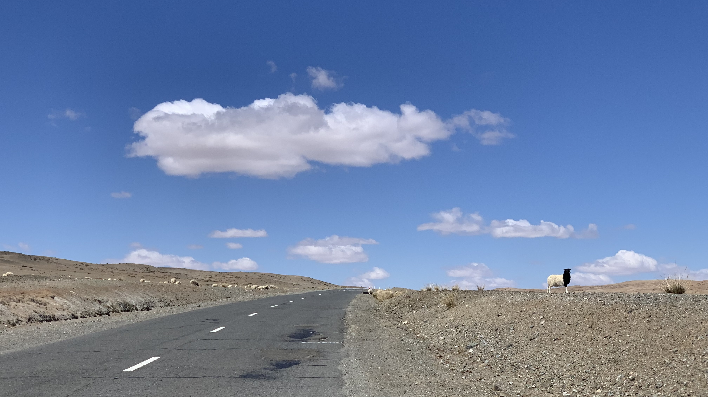
早上已經熱到難以賴床的程度，牽著車走上柏油路，發現一群正在吃乾草的羊。旁邊有位牧民騎著摩托車接近，對著我比了個大姆哥。
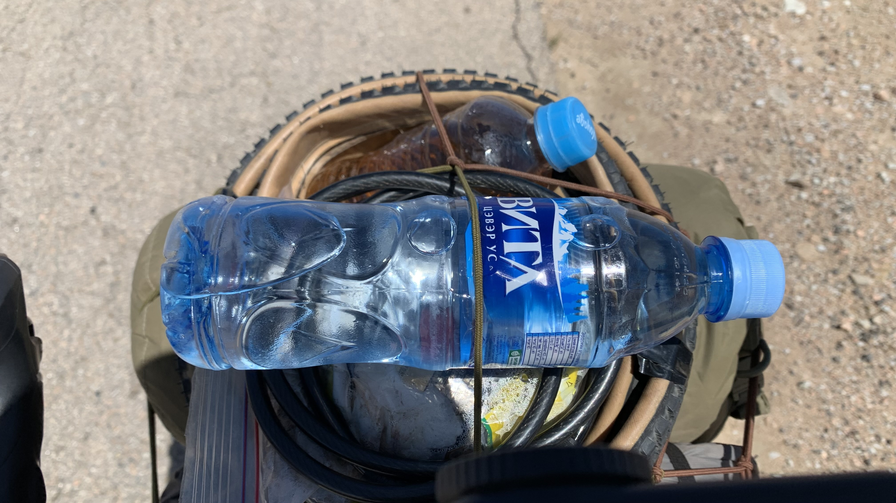
今天的風比昨天更強了一些，沒什麼力氣抱怨了。低頭騎著上坡路，路邊來了一輛補水車，喜獲礦泉水一瓶。
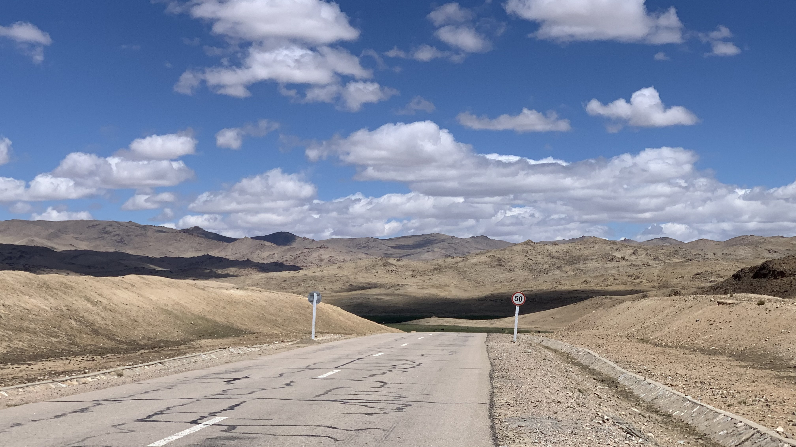
眼前一片眼前一片黃色世界，下方似乎出現綠洲。
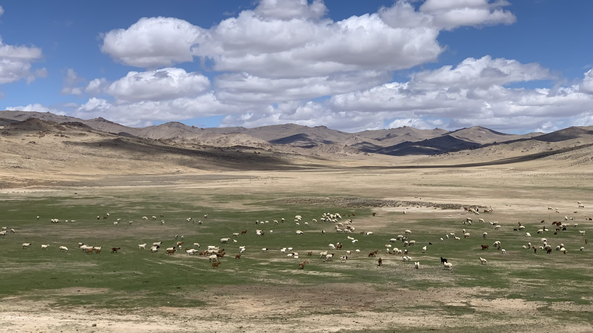
綠色的草上鋪著羊群，正在拍照時，遠處捲起延伸到空中的黃色小龍捲風，從山的方向逐漸逼近羊群。黃沙掃過的瞬間，羊群們發出驚慌的咩咩聲，朝著兩邊奔逃。幾秒鐘後，風沙就掃到我臉上。
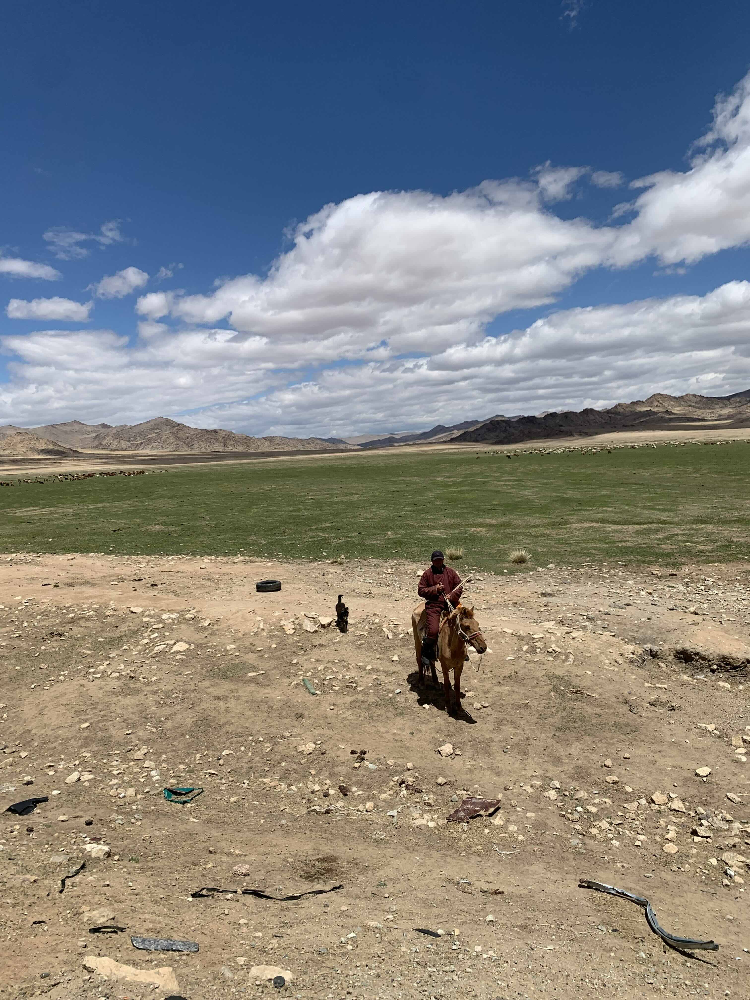
穿著大紅色蒙古袍的牧民從遠方騎著馬兒朝我走來，跟在旁邊的小狗也一起停在我面前。
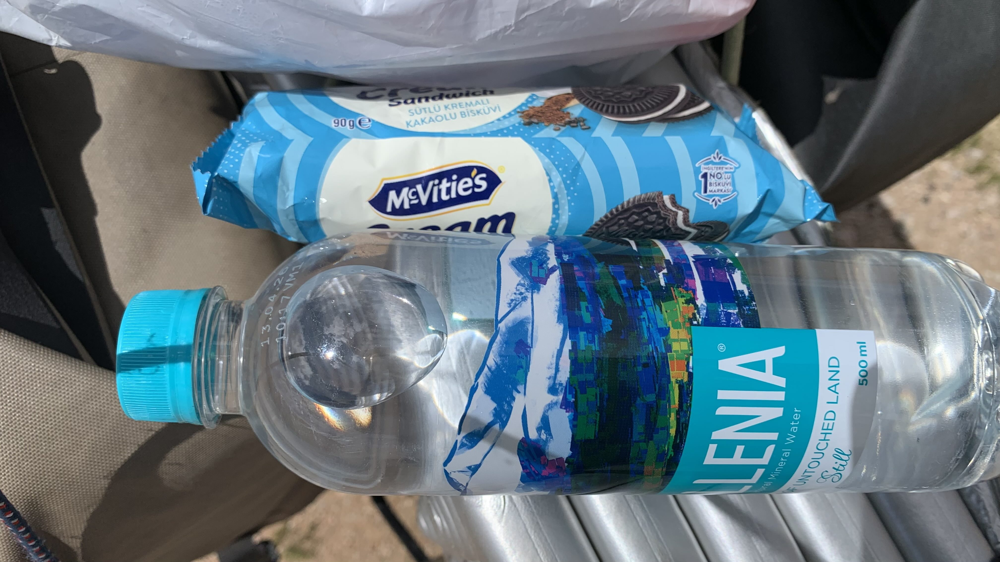
天氣太熱，坐在路邊休息。對向車道停了一輛車，一名身穿始祖巨人短T的男子走下車，將手上的巧克力夾心餅乾和礦泉水交給我。
拍完合照後，聽到他和車上的女子說：「是台灣人。」
跟兩位揮手感謝，這種熱天，在沒有商店城鎮的路上，這些飲水和食物是騎行者綠洲。
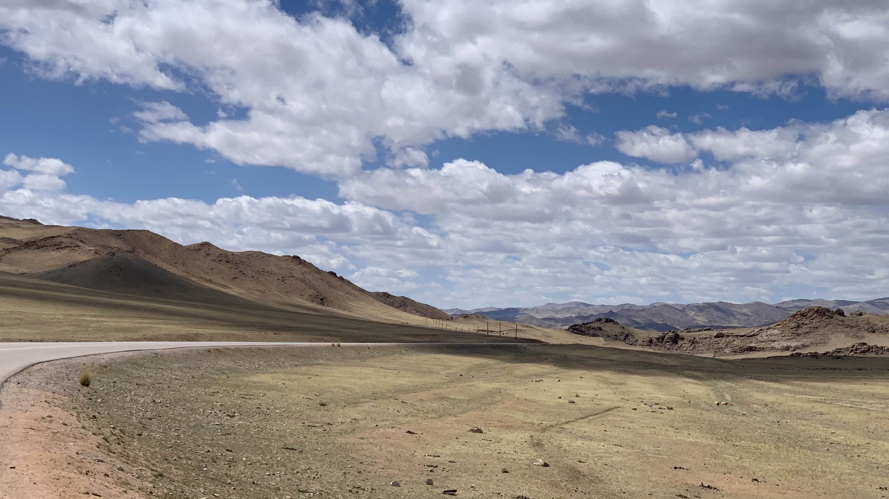
爬了幾天的山，終於要下坡了。
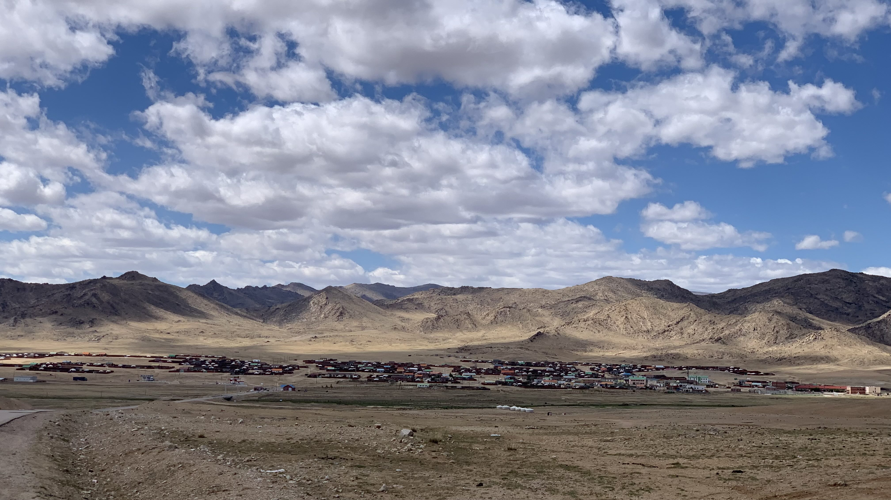
竟然出現大型城鎮，相當意外。
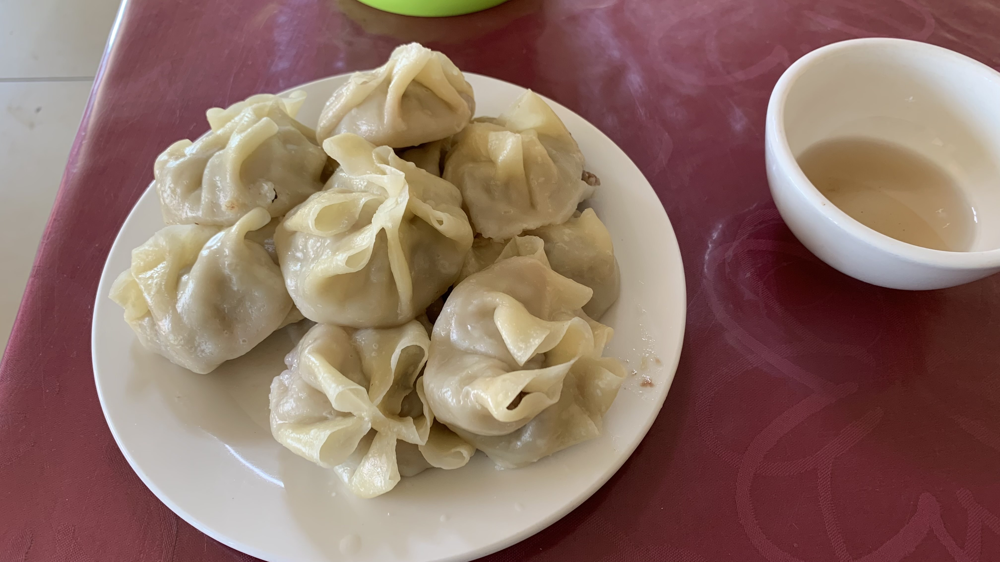
找了一家店，進門跟老闆點10顆水餃，一顆2000元。是肉包長相，餃子皮，裡面包著羊肉餡料。吃飽後到馬路邊的旱廁上個廁所，繼續出發。
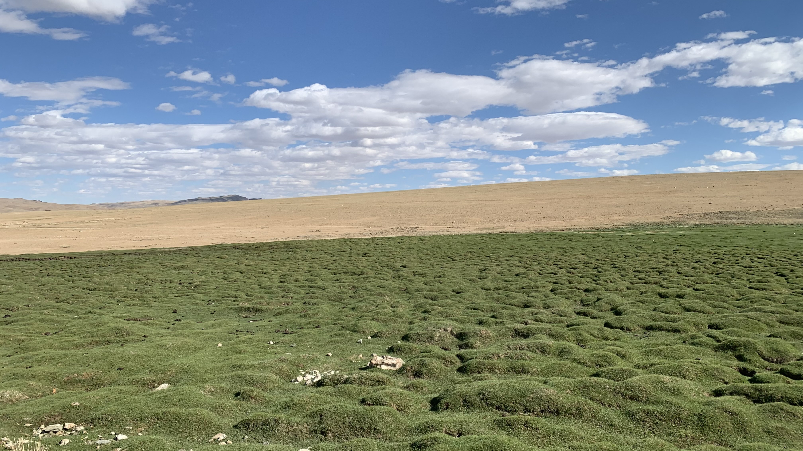
路旁出現像是苔蘚一樣的綠色，附著在石頭上，跟黃沙的分界相當明顯。
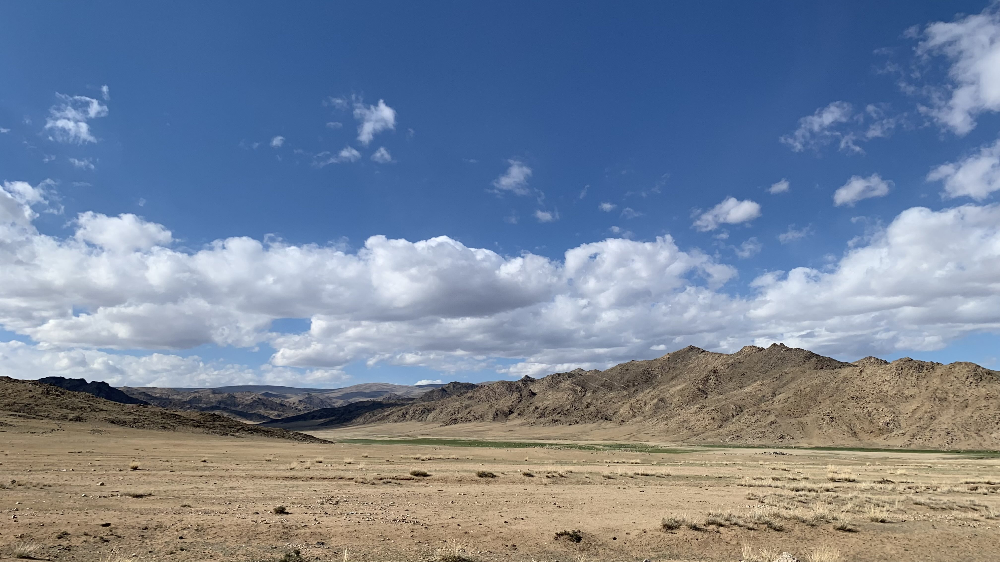
下午仍是繼續爬山，盡量多解決幾個坡。
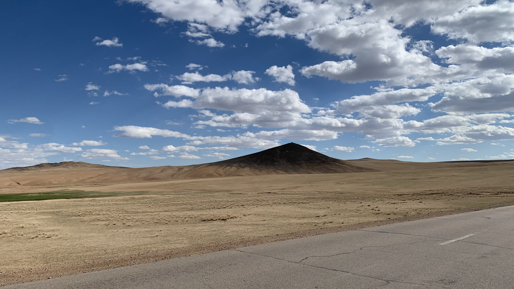
地形變成沒看過的樣子，不太像我認識的地球。
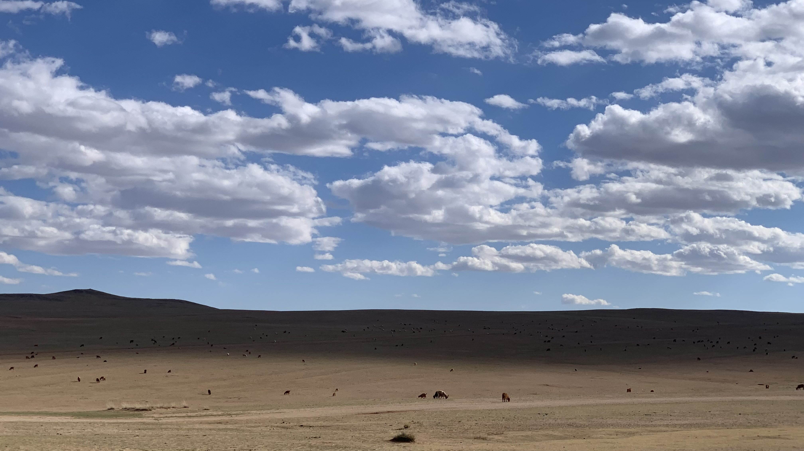
明明沒有任何植物，這些羊究竟在啃什麼呢？
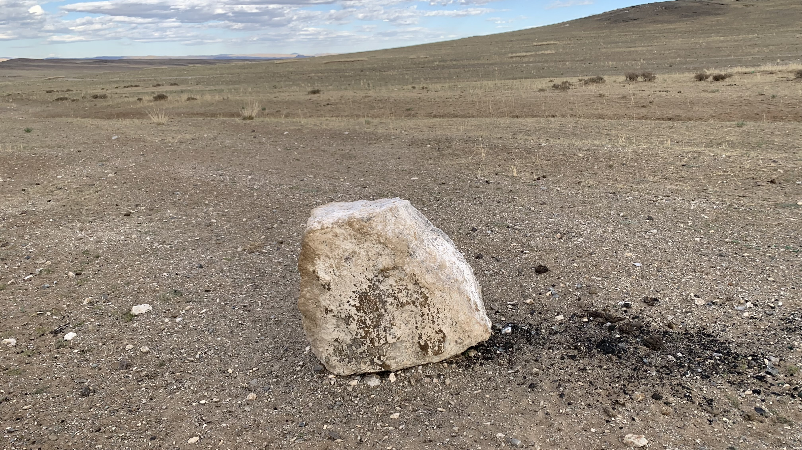
自從決定南下後，騎車時會不自覺掃射路邊的石頭，看到這種類型的石頭就會牽著車往路邊走。當然都不是石人，這裡沒有石人。
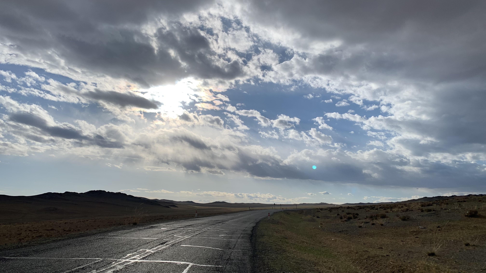
這是今天最後一個坡，下方無論是什麼，都必須找地方睡覺。
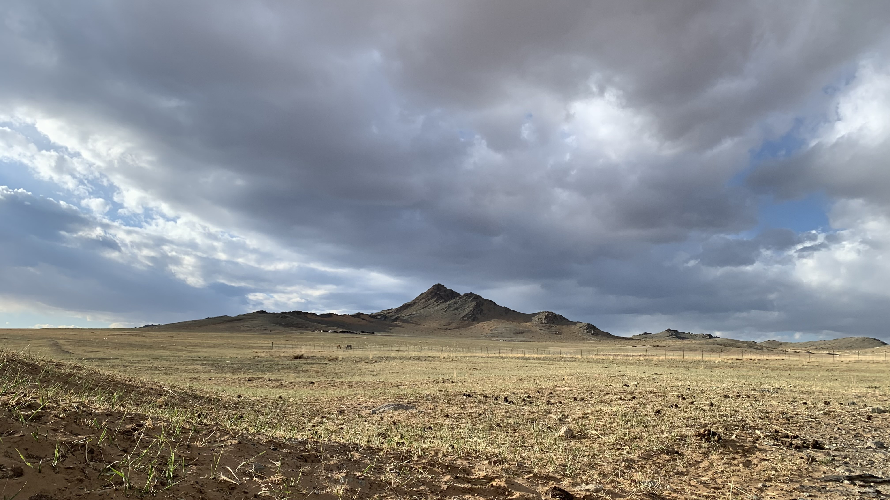
今天風還是很大，找了個涵洞打算睡在下方。離山腳的蒙古包有點近，放牧回來的主人看了我一眼，並沒有趕我走。
今日花費： 餃子 20000、水＋咖啡＋蘿蔔汁 9000元